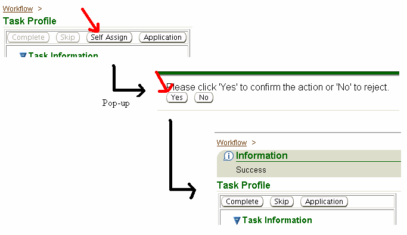
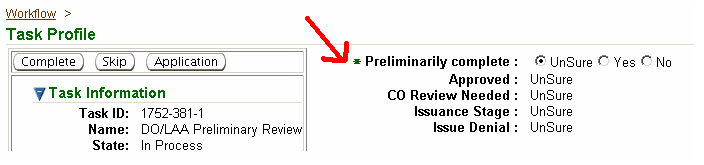
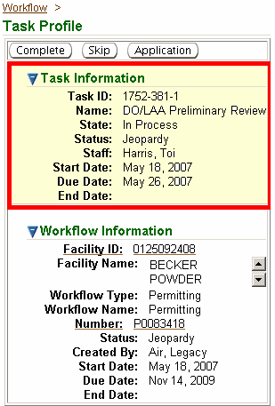
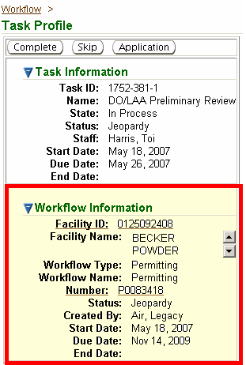
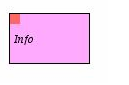
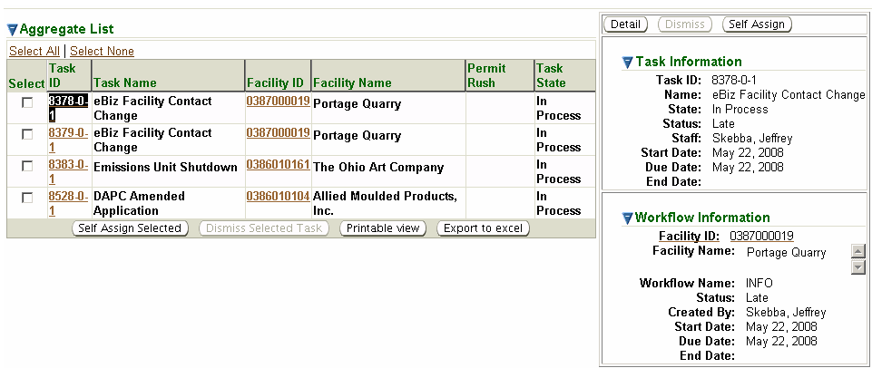
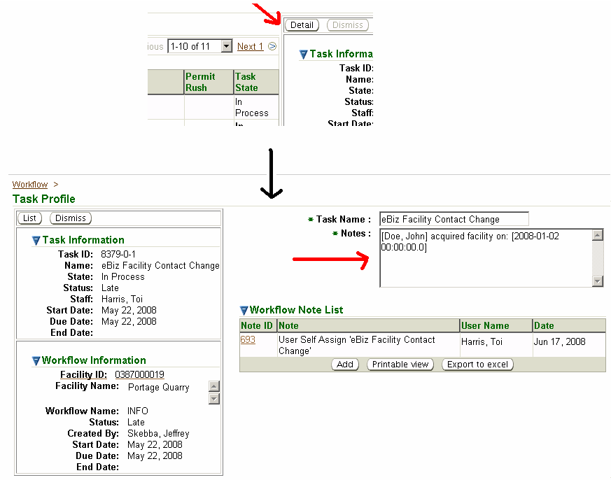
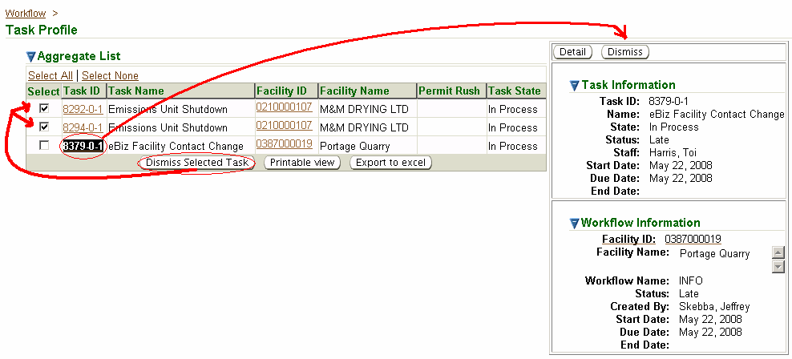
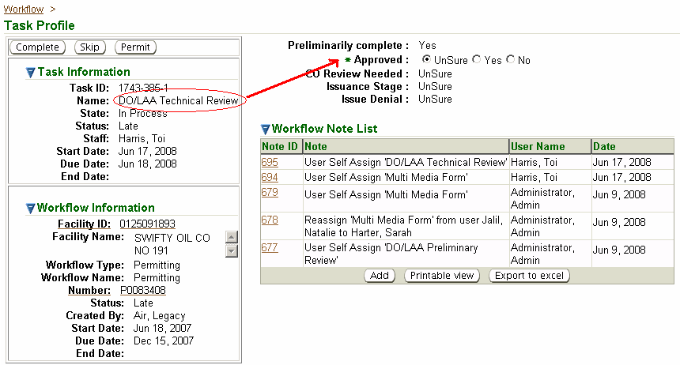
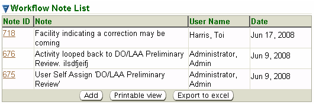

The second-level
menu, Task
Profile,
of the Workflows tab is where you
view details of a specific task, details of the
workflow associated with the specific task and where you identify a
task is complete
in order to move to the next step in a workflow. TheTask
Profile
page is specific to a particular task in the workflow and it will
contain
clickable buttons that launch other system pages (e.g., an Application
Detail page).These clickable buttons will be referred to as “action
buttons” in this
Help page.TheTask
Profile
page may also contain radio buttons used
to make decisions regarding the direction of the workflow.These radio buttons will
be referred to as
“decision buttons” in this Help page.The
availability of action buttons and radio buttons depends on the type of
workflow, stage of the process and who is assigned the task, among
other
factors.
Located
immediately below the Task
Profile
title, the following action buttons are
possible:
Self-Assign – this action button will only
be available if you are not assigned to the specific task being viewed.Selecting this button
allows you to reassign the task to yourself. Other action
buttons will appear and tasks can be completed only after you first Self-Assign the task. Clicking Self-Assigngenerates a pop-up box where you will click either Yes or No to reassign the task to
yourself.

Complete – used to sign off on a task
when the associated work has been done.It may be necessary to make decisions via the decision
buttons on the right side of the screen before a task can be completed.
For example, selecting Yes or No for whether or not an
application is
Preliminarily complete
in order to complete the DO/LAA Preliminary Reviewtask.

Skip – allows the user to move
forward in the workflow without completing the current step but is
available only if the task does not have a decision associated with it.
Permit – applicable only to permitting
workflow types that have passed the DO/LAA Preliminary Reviewtask. Navigates to the
associated Permit
Detail
screen.
Application – applicable only to the DO/LAA Preliminary Review task only.Navigates to the associated Application Detail screen.
Emissions Inventory – applicable only to emission
reporting workflow types.Navigates
to the associated Emission Report Detail screen.
Located in a box
below the action
buttons, this section contains the following information about the
particular
task:

Task ID – system identification number
formatted as a series of three numbers separated by a dash and
consisting of: workflow
ID - task number - iteration number. The iteration number
will be ‘1’ initially and change to ‘2’ if the task is repeated, for
example when a reviewer returns a permit for further technical review.
Name –title of the task as it
appears in the task block on the Workflow Diagram.
State – displays the state of the
particular task and corresponds to the color-coded Task Legend in the Workflow Diagram. The five possible
states include: Not Completed, Skipped,
In Process, Referred and Completed.Note, in order to be able to complete a task, the State must be In Process.
Status –indication of whether the workflow
is projected to be completed on time.The Status corresponds to the color-coded
timeline at the top of the Workflow Diagram.The three possible Status’ include: OK (on time/green); Jeopardy (nearing the deadline/yellow);
or Late (past the deadline/red).
Staff – name of the staff currently
assigned to the particular task.
Start Date –date on which the task State is In Process and is eligible to be Completed.
Due Date –date the task is expected to
be Completed, system-calculated by adding a
preprogrammed time allowance for the task to the Ready Date.
End Date – date the particular task was Completed or Skipped.
Located in a box
below the Task
Information, this section
contains the following
information about the particular workflow:

Facility ID – ten digit ID assigned to the
associated facility.A
hyperlink for accessing the “current” Facility Detail page.
Facility Name – name of associated facility.
Workflow Type – general type of workflow: Emission Reporting; Permitting; Other; Info or Compliance Reports. Info and Compliance Reports workflows are contained in
aggregate lists in the Task Profile. These are one-step workflows
that are informational. For example, if an emissions unit is shutdown
or if a contact name changes for a facility. Aggregate lists are
discussed further below.
Workflow Name – specific name of Workflow:
Emission Reporting workflow names: Blue Card Review and
SMTV/TV Emission Review.
Permitting workflow names: Permitting,Rescission,PBR and Extension.
Info workflow names: the system
contains many types of Info workflow names. The most commonly used is Facility
Changes/Miscellaneous.
Number –unique ID number generated by
the system and assigned to the document that is applicable to the task.
The ID will be a hyperlink to the document detail screen itself (i.e.,
application, permit, emission report). If a document is not associated
with the task no Number will be identified.
Status –indication of whether the workflow
is projected to be completed on time.The Status corresponds to the color-coded
timeline at the top of the Workflow Diagram.The three possible Status’ include: OK (on time/green); Jeopardy (nearing the deadline/yellow);
or Late (past the deadline/red).
Created By – user who initiated the action
causing the workflow to be created, for example the user who submitted
an application.Note,
Air,
Legacy
represents a workflow created by data migrated from an older system and
Gateway,
Gateway
represents a workflow created by an external electronic submittal.
Start Date –date from which processing
time is calculated for the workflow. This date is set when
the workflow is created but it can be changed.
Due Date –date by which the workflow is
expected to be completed, system-calculated by adding the preprogrammed
time allowance for the workflow to the Start Date. In certain instances the Due Date can be extended.
End Date – date the particular workflow
was completed or dead-ended, or blank if not yet completed.
Some
workflows are simple
one-step workflows categorized as Info
workflows.

Info workflows are
contained in an Aggregate
List
in the Task
Profile.Some aggregate
lisworkflowdiagram_8ts are
individual to a type, for example all compliance reports on a specific
person’s
ToDos list will be in
one aggregate list.Other
aggregate lists contain multiple task
types, e.g., emissions units shutdowns, contact name changes, etc.The Aggregate
List will
be specific to the
Staff
assigned to these
tasks. For example, all compliance reports assigned to a specific
DO/LAA person
will be in one Aggregate
List.
Here is an example of
an Aggregate
List:

The Task
Information
and Workflow
Information to the right of
the Aggregate
List
are associated with the Task ID highlighted in
the Aggregate
List.To view the detailed information for other tasks in the Aggregate
List,
click on the Task ID and the detail
information will change
to the right.Even
greater detail about
the specific aggregate task being viewed can be accessed by clicking on
the Detail button:

The Notes section
to the right will identify the details of the aggregate task being
viewed.After
viewing the detail information you can
return to the Aggregate
List
by clicking on the List button under the Task
Profile
heading.
Aggregate tasks
contain a one step Info workflow that can
be dismissed (removing
it from your ToDos list)
once viewed.You
can dismiss an
aggregate task.If
you are viewing the
detail page for a specific aggregate task (as seen just above), you can
click
on the Dismiss button under the Task
Profile heading
to dismiss ONLY that task from
the list.
If
you return to the Aggregate
List
page (by clicking the
List button),
you can dismiss one or more tasks from the Aggregate
List
at one time.There
are two options on this page.You
can place a checkmark in the select
column for each Task
ID you
wish to dismiss and then click the Dismiss
Selected Task
button at the bottom
of the datagrid, or you can highlight one individual Task
ID and
click the
Dismiss
button in the information
boxes to the right.

Once dismissed, Aggregate
List
tasks are not retained as “completed” for
searching later.However,
the types of
task contained in the Aggregate
List
can be found in other
locations for the specific facility.For
example, you can always see all compliance reports submitted by a
facility from
the third-level menu Compliance
Report(s)
of theFacility
Profile.Likewise,
for miscellaneous facility changes, such as changes in contact
information or
emissions unit shutdowns, you can always see a log of events from the
third-level menu Event
Logs of theFacility
Profile.
The workflow start
and end date are
pre-programmed based on the processing time needed for the various
workflow
types.It is
important to keep this in
mind with respect to permitting.This
color-coded timeline for all permitting workflows will be based on a
180-day
clock although not all permit types will be subject to the regulatory
requirement.Below
is the duration
pre-programmed for each workflow type and the number of days when the
jeopardy
status begins.
Decision Buttons and Decision List (above Workflow
Note List)
This
section of this page
identifies a list of decisions which will be made at various stages of
the
workflow. Initially, they will all be set to “UnSure”. As you work through the
various tasks that
comprise a workflow, you may be required to make certain decisions in
order to
proceed to the next task.When
your are
viewing a specific task that requires a decision, the decision button
will be
preceded by an asterisk (*) and it will be followed by a set of radio
button
choices, one of which must be selected before the task can be
completed.
Decisions are made to determine which branch of the workflow diagram is
followed. Here is
an example of a
Permitting
workflow for the DO/LAA
Technical Review task:

The
following identifies
the different decisions that will be needed for the various workflows
(note
that workflows in aggregate lists do not require decisions so they are
not
addressed below):
Preliminarily
complete: select Yes or No after review of the application.Until it is reviewed, it
should remain on Unsure.You can access the
application by clicking on the Application
action button.If you select No the workflow
will only allow Return
Application as a
future task and future re-submittal
of an application will generate a new workflow.
Approved: select Yes or No after review of the application for
technical completeness
AND after the permit terms and conditions are ready for
review by the
DO/LAA Supervisor.You
can access the
application by clicking on the Application
action button.If you select No the workflow
will only allow the DO/LAA
Write Denial path
of the workflow to
continue.If you
select Yes the next step will be DO/LAA
Permit Approval.
CO
Review Needed: select Yes or No depending on whether CO will review
the prepared permit.
Issuance
Stage: select Draft,
PPP, PP, or Final from a picklist. This
section will be amended by Central Office
starting with theCO
Permit Review task
and depending on how the permit is issued, this selection may be updated
throughout the workflow as it proceeds to
the next level of issuance.
Issue
Denial: this
decision
button is available only after the workflow has progressed to Central
Office
and is at the CO
Denial Approval task.Central Office will select Yes or No to indicate the denial is being issued.
Process
Rescission:
select Yes or No during the DO/LAA RPR
Review task.You can access the RPR
request by clicking on
the Application
action button.If
you select No the workflow will only allow Return RPR as a future task and future
re-submittal of an RPR request
will generate a new workflow.
RPR
Issuance: select Propose,
Propose Final or
Final from a picklist.This section will be amended by Central
Office starting with thePIDM
RPR
Review task and depending on how the RPR is issued, this selection may be updated
throughout the workflow as it
proceeds to the next level of issuance.
Acceptable: select Yes or No during the DO/LAA PBR
Review task.You can access the PBR
notification by
clicking on the Application
action button.If you select No the workflow will only allow Return PBR as a future task and future
re-submittal of a PBR
notification will generate a new workflow.
Rescission: select Yes or No during the Revocation
Determination
task.If a
revocation is needed it will
be necessary to perform the Confirm
Rescission task
before
you can approve the PBR.
Notes:
You can add a note to this field only when completing theAcceptabledecision button
above. Othernotesare added via the Workflow
Note List.
Extension
Approved: select Yes or No during the DO/LAA
Review task.You can access the
Extension request by
clicking on the Application
action button.If you select No the workflow will only allow Denied
Extension as a
future task and future re-submittal of an Extension
request will generate a new workflow.
Review
Needed: select Yes or No during the Evaluate
BlueCard task.If a review is needed it
will be necessary to
perform the DO/LAA
BlueCard Review branch
of the workflow.
CO
Review Needed:
this is only available when you select Yes
to the Review
Neededdecision
button. SelectYes
orNo
during the DO/LAA
BlueCard Review task
indicating if Central Office
review is needed.
Analysis
Outcome: select Site
Analysis, Notification Received or Noneduring thePreliminary
Analysis
task.If
Site
Analysisis needed it will be necessary to complete additional steps of the
workflow. You can access the ITR by clicking on theApplicationaction
button.
DO/LAA
Resolution need:
select Yes or No during the CO Resolve task.If a resolution is needed it will be
necessary to perform the DO/LAA
Resolve task
before you
can complete the workflow.If
a
resolution is not needed the workflow will end by automatic completion
of the Done task.
Has
the Facility Detail been updated:
this is only available when you selectYesto theDO/LAA
Resolution needdecision
button. SelectYesorNoduring the DO/LAA
Resolve
task indicating if the
answer to the question.
Located in a datagrid on the right side
of the screen is a section that contains useful information about the
particular workflow and also allows additional notes to be added, as follows:

Note ID – unique
clickable ID number generated by the system and assigned to the note.Clicking the Note ID hyperlink will create a pop-up of the note where you can view the
full text of the note.If you were
the generator of the note it will also be editable.
Note – the beginning
text of the Note. Many actions that are part of the workflow
process (i.e., self-assigning or reassigning a task) will automatically
generate a note that contains a description of the action.Other notes are added during the
workflow process.
User Name – user who
entered the Note or initiated the action causing the system to
auto-generate the Note; “Air,
Legacy” if migrated from an old
system.
Date – date the Note was entered; migration date if migrated from an old system.
To add a note click the Add button, enter text into the pop-up box and click Save.
To the left of
the Task Profile page are the following third-level menu
options and the activities they allow:
Reassign: allows you
to view who is assigned to the task and also allows those with rights to
assign a different user to a task(s).For more information on rights and user roles, see the Help page
entitled “Facility-Based
User Roles.”
Change Start Date: allows you to change the start date for this
task.
Loop Back: allows you to return to a previous workflow task and continue
processing from that point.
Referral: allows you to identify an entity you have asked for additional
information from in order to continue processing the task.
The specific Help pages for each of the features above provides specific
details on the information and functions contained in those pages.